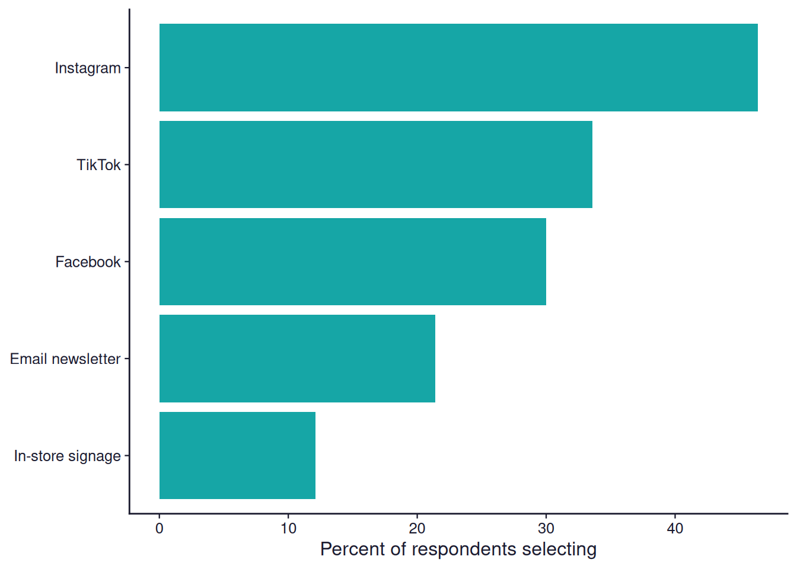

![]()
choices <- sf_choices(
"channels_used",
values = c("instagram", "facebook", "tiktok", "email", "in_store"),
labels = c("Instagram", "Facebook", "TikTok", "Email newsletter", "In-store signage")
)
item <- sf_item(
id = "channels_used",
label = "Which of these did you notice our store's promotion on? Select all that apply.",
type = "multiple_choice",
choice_set = "channels_used",
required = TRUE
)
instrument <- sf_instrument(
title = "Promotion Awareness Survey",
version = "0.1.0",
components = list(choices, item)
)surveyframe Field Types: Multiple Choice
surveyframe
R packages
survey research
how-to
Declare a multiple_choice question in surveyframe and see the real codebook, exported survey, multi-response summary table, and Cochran’s Q test it produces. Copy-pasteable R throughout.
Keywords
surveyframe, multiple_choice, R package, survey design, analysis plan, cochran’s Q, sf_item
TL;DR: multiple_choice lets a respondent select several options at once, a nominal set rather than a single answer. This post declares one with sf_item(), shows the real codebook and exported survey, then runs a real Cochran’s Q test to check whether selection rates actually differ across options, alongside the multi-response summary table every “select all that apply” question needs. Every table and chart on this page, except the one screenshot of the exported survey, was generated by the R code shown, at render time, from surveyframe 0.3.4 installed straight from CRAN.
New to surveyframe? The single choice post walks through the same workflow from the beginning. Everything below assumes you have install.packages("surveyframe") done.
The case
You run a small store and just finished a promotion across several channels: Instagram, Facebook, TikTok, an email newsletter, and in-store signage. You want to know which of those channels people actually noticed, and a visitor may have noticed more than one. That rules out single_choice, since forcing one answer would throw away real information. It is a multiple_choice question: select all that apply.
Declare the item
A multiple_choice item is declared exactly like single_choice: an id, a label, a choice_set, and whether it is required. The difference is not in how you declare it, it is in how a respondent answers it and how the responses come back.
See it as a codebook
codebook_report() produces the same two tables as it does for any item type: the items and their choice sets. Real output from the instrument declared above.
cb <- codebook_report(instrument, format = "md")| id | label | type | choice_set | scale_id | reverse | required |
|---|---|---|---|---|---|---|
| channels_used | Which of these did you notice our store’s promotion on? Select all that apply. | multiple_choice | channels_used | FALSE | TRUE |
| choice_set_id | value | label |
|---|---|---|
| channels_used | ||
| channels_used | ||
| channels_used | tiktok | TikTok |
| channels_used | Email newsletter | |
| channels_used | in_store | In-store signage |
Export it and see what a respondent sees
export_static_survey() writes the same kind of self-contained HTML file it writes for any item type. What changes is the input: five checkboxes sharing one field name instead of one set of radio buttons, so a respondent can tick more than one.
export_static_survey(
instrument,
output_path = "promotion_survey.html",
open = TRUE
)This is the one piece of this page that is a screenshot rather than live output. What follows is that file, unedited, at phone width, with Instagram and TikTok both ticked.
export_static_survey() for the channels_used item: five bordered checkbox cards lettered A to E, two of them ticked (Instagram and TikTok), and a Submit button.Write the analysis plan before you collect anything
A single multiple_choice item does not come back as one column. It comes back as one column per option, each TRUE or FALSE, since a respondent can tick any combination of the five. The frequency method from the single_choice post only tabulates one variable at a time, so it is the wrong tool here: run it on five binary columns and it quietly tabulates only the first one, dropping the other four (worth knowing before you rely on it).
The method built for exactly this shape is cochran_q: it tests whether the selection rate differs across a set of related binary measures. Declared with roles = list(measures = ...), naming every column, before any response exists.
instrument <- sf_instrument(
title = "Promotion Awareness Survey",
version = "0.1.0",
components = list(choices, item),
analysis_plan = list(
list(
id = "RQ1",
research_question = "Do selection rates differ across the five channels?",
family = "association",
method = "cochran_q",
roles = list(measures = c(
"channels_used_instagram", "channels_used_facebook", "channels_used_tiktok",
"channels_used_email", "channels_used_in_store"
))
)
)
)Run the plan against responses
In your own project this is read_responses() reading a CSV or Google Sheet, with one logical column per checkbox option. Here it is 140 rows of synthetic data, generated once with a fixed seed so this page renders the same result every time. The exact file is downloadable as 11-multiple-choice-responses.csv, if you would rather point read_responses() at a real file than regenerate it.
set.seed(42)
n <- 140
responses <- data.frame(
channels_used_instagram = sample(c(TRUE, FALSE), n, replace = TRUE, prob = c(0.55, 0.45)),
channels_used_facebook = sample(c(TRUE, FALSE), n, replace = TRUE, prob = c(0.35, 0.65)),
channels_used_tiktok = sample(c(TRUE, FALSE), n, replace = TRUE, prob = c(0.40, 0.60)),
channels_used_email = sample(c(TRUE, FALSE), n, replace = TRUE, prob = c(0.20, 0.80)),
channels_used_in_store = sample(c(TRUE, FALSE), n, replace = TRUE, prob = c(0.15, 0.85))
)results <- run_analysis_plan(responses, instrument)
rq1 <- results[[1]]Cochran’s Q(4, N = 140) = 43.56, p < .001
That result answers one question: are the five rates different at all. It does not say which channel leads, or by how much, which is what a reader actually wants to see first.
The multi-response summary table
This table is not surveyframe output, it is five lines of base R against the same responses data frame: how many respondents ticked each option, and what share of the sample that is. Every multiple_choice write-up needs a table shaped like this, whichever tool produces it.
labels_map <- setNames(choices$labels, paste0("channels_used_", choices$values))
summary_tbl <- data.frame(
Channel = labels_map[names(responses)],
Selected = colSums(responses),
Percent = round(100 * colMeans(responses), 1)
)
rownames(summary_tbl) <- NULL
summary_tbl <- summary_tbl[order(-summary_tbl$Selected), ]| Channel | Selected | Percent |
|---|---|---|
| 65 | 46.4 | |
| TikTok | 47 | 33.6 |
| 42 | 30.0 | |
| Email newsletter | 30 | 21.4 |
| In-store signage | 17 | 12.1 |

Instagram leads at 46.4%, in-store signage trails at 12.1%. Cochran’s Q above confirms that spread is real rather than sampling noise. Neither number replaces the other: the summary table shows the shape, the test shows whether the shape means anything.
Adapt this to your own survey
To reuse this for a different multiple_choice question, change four things and leave the rest:
- The
idandlabelinsf_item() - The
valuesandlabelsinsf_choices() - The column names in the plan’s
roles$measures, and inresponses, to match your newid(surveyframe names each binary column<id>_<value>) - The probabilities in the synthetic
responses, or pointread_responses()at your real data
The codebook, the export, and the multi-response summary table work the same way regardless of how many options the question offers.
Get surveyframe
install.packages("surveyframe")
- Documentation: mohammedalisharafuddin.github.io/surveyframe
- Source: github.com/MohammedAliSharafuddin/surveyframe
- Release notes: surveyframe 0.3.3 is on CRAN
- The single_choice walkthrough this post builds on: surveyframe Field Types: Single Choice